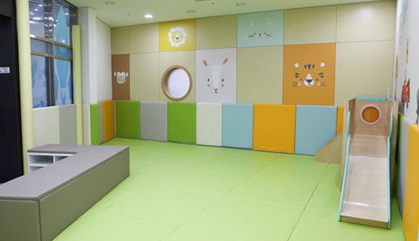
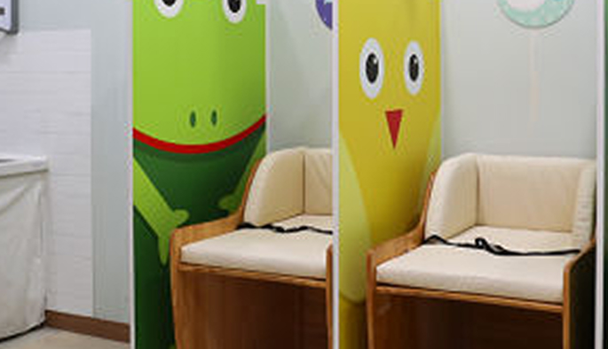
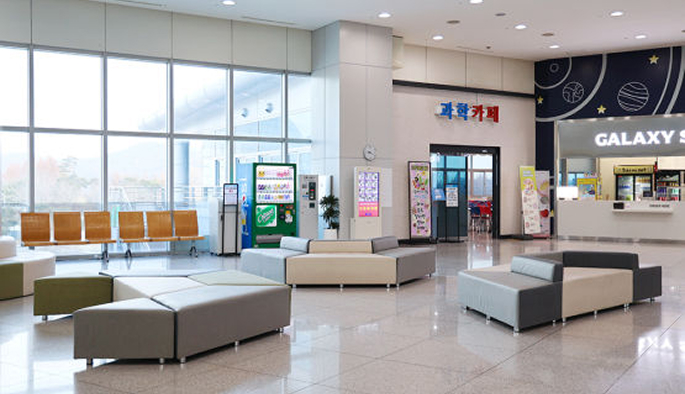
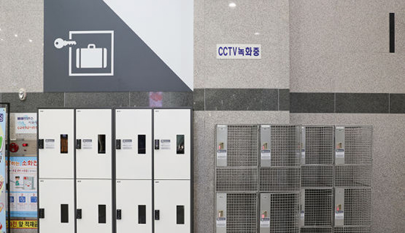
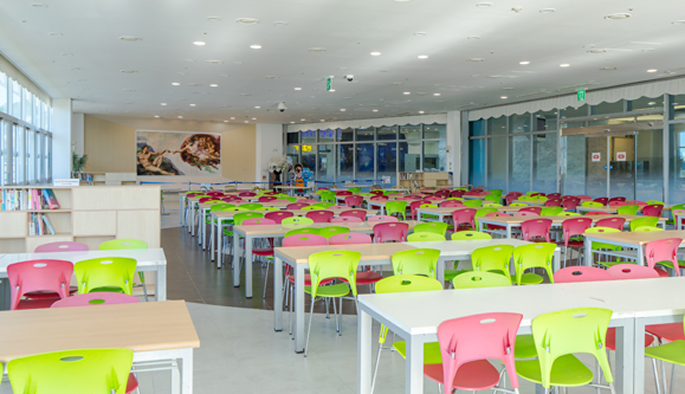
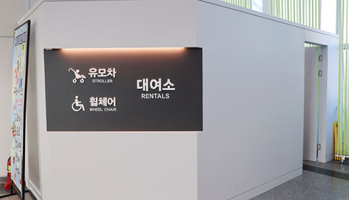
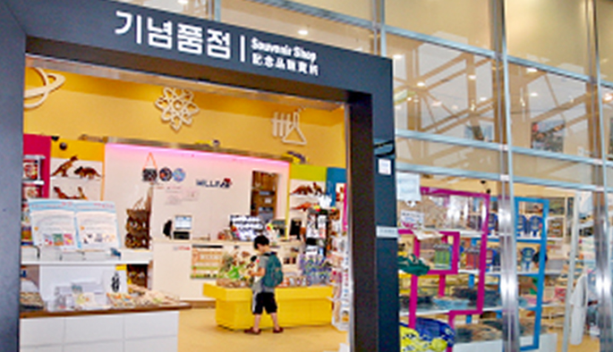
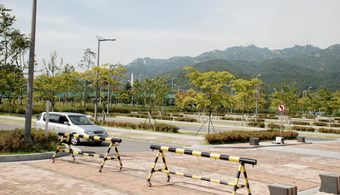

시설안내
arrow_cool_down시설대관
과학기술문화 확산을 위한 교육 · 학술활동 · 전시회 또는 행사
과학기술과 관련된 국가적인 행사
청소년의 정서함양과 건전한 가치관의 형성과 관련된 행사
-
대관 가능 날짜 확인
01
시설 별 담당자 문의 -
대관 신청서 작성
02
신청서다운로드 -
신청서 제출
03
이메일, FAX, 방문
-
심사 및 승인
04
추후 개별 연락
편의시설
-

영유아를 위한 수유, 미아보호 등을 위한공간(면적 39m2)으로 가족단위 관람객이 안심하고 편리하게 관람 하실 수 있습니다. 아이들과 함께 오신 가족단위 관람객이 잠시 휴식하실 수 있는 공간입니다.
유아쉼터 -

간단한 의약품들이 비치되어 있어 응급시 처치를 도와드립니다. 1층 유아체험관 옆에 위치하고 있으며, 간단한 의약품들이 비치되어 있어 응급시 처치를 도와드립니다. 안으로 들어가시면 기저귀 교환대 3개가 보입니다. 기저귀 교환대와 휴지통이 있어서 아기의 기저귀를 위생적이고 편리하게 교환 하실 수 있습니다. 다른 관람객에게 신경 쓰지 않고 아기에게 수유할 수 있도록 커튼으로 꾸며져 있습니다.
구급실 · 수유실 -

과학관 관람 중 편안하게 쉴 수 있는 휴식공간을 제공합니다.1층과 2층에 마련되어 있습니다.
휴게시설 -

물품보관을 위한 라커가 설치되어 있습니다. 전시장 입장하면 1,2층 좌측과 우측에 물품 보관을 위한 라커가 설치되어 있습니다. 사용 가능한 라커는 총 250여대입니다
물품보관함
이용 시간 - 9:30 ~ 17:30 -

개인 및 단체등 관람객이 가지고 온 점심식사를 할수 있는 공간과 휴식을 위해 마련된 공간이며, 과학프로그램이 진행 될 수도 있습니다.
과학까페 -

유모차와 휠체어를 대여하실 수 있도록 유모차·휠체어 대여소가 준비되어 있습니다. 대여료는 무료이며, 신분증을 맡기신 뒤 반납할 때 찾아가시면 됩니다.
유모차·휠체어 대여소 -

과학관 관람을 기념할 수 있는 기념품 등을 구입하실 수 있습니다. 과천과학관 중앙 정문으로 들어가면 기념품점이 좌측에 위치하여 있으며, 각종 문구세트, 인형, 도서 등이 비치되어 있어 기념품을 구매할 수 있습니다.
기념품점 -

총 1,116대 주차 (대형 38대, 장애인주차구역 44대 포함)가 가능합니다. 주말에는 교통이 혼잡하므로 대중교통(지하철 4호선)을 이용하시면 더욱 편리한 관람이 되실 것입니다.
주차장